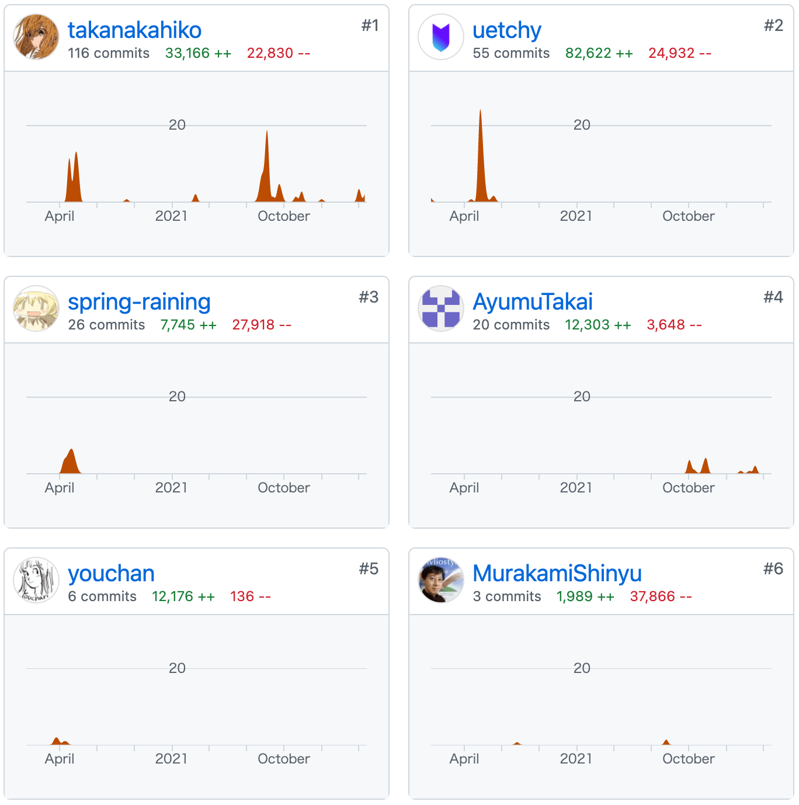
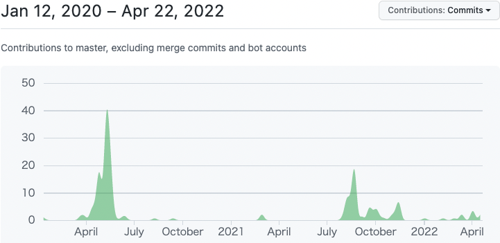

Vivliostyle Pub、
2022年ついに公開！
Vivliostyle Pubアルファ版公開
CSS組版で本を作るWebアプリVivliostyle Pub、ついに公開！
アルファ版: https://vivliostyle-pub-develop.vercel.app/
ユーザーガイド: https://vivliostyle.github.io/docs-vivliostyle-pub/

Vivliostyle Pubでできること
- 無料、インストール不要、Webブラウザだけで本が作れる
- 組版結果をプレビュー確認しながら執筆・編集ができる
- 簡易なマークダウン記法で原稿が書ける
- ページデザインは、テーマから選べる
- 既存テーマをカスタマイズしたり自分でCSS書いてもよい
- Webフォント対応
- GitHub利用。原稿変更履歴がGitHubに保存される
- 多数の原稿からなる出版物制作、その共同編集作業も可能
- PDF出力、Web出版物(WebBook)、EPUB生成（予定）
アルファ版の主な制限と、今後の開発
まだアルファ版なので出来てない機能や制限が多々あります。
以下は、今はまだないけれど今後開発予定の機能の主なもの
- スタイル・テーマの設定、カスタマイズ機能
- 目次作成を簡単に
- 表紙の作成を簡単に
- プレビューをファイル単位でなく出版物全体でも可能に
- プレビューをページ表示とスクロール表示の切り替え可能に
- 印刷用PDFと閲覧用PDFなど、目的別のPDF出力の設定
- EPUB生成機能、EPUBやWeb出版物での作品公開を簡単に
- 出版物メタデータの設定・編集機能
Vivliostyle Pubで作った本の印刷製本には
Vivliostyle Pubで作った本の印刷製本がスムーズにできるよう、印刷製本サービスのmybooks POD（欧文印刷株式会社）と提携。

- Vivliostyle Pubから提携先サービスに繋げるようにする予定
- 印刷製本、電子書籍配信等、提携に関心あればご連絡下さい
Vivliostyle Pubの開発貢献者たちに感謝！
Vivliostyleの他のプロジェクトと同様、Vivliostyle Pubはオープンソースでボランティアの開発貢献者たちで開発されてます。

開発協力者募集！
